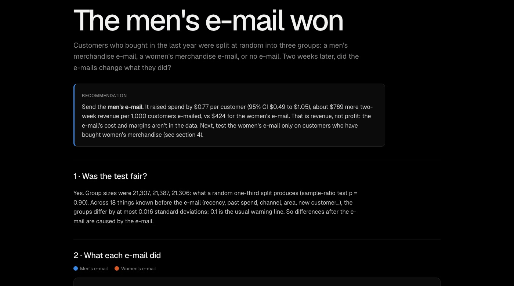

Statistics · A/B testing · 2026-10
E-mail A/B Test Readout
A real randomized experiment on 64,000 customers, analysed like a product team would: is the test fair, what did each e-mail do, how sure are we, and who should get which e-mail?

The data is a public 2008 experiment, so the recommendation is about revenue over two weeks: e-mail costs, margins and long-term effects such as unsubscribes aren't in it.
01 — The problem
Before a company sends an e-mail to every customer, it tests it: a random group gets the e-mail, a random group doesn't, and the difference is the e-mail's effect. Reading that result is easy to get wrong, though. You might trust a broken split, call noise a win, test ten things and celebrate the lucky one, or report a difference with no idea how sure it is. In a real three-way test (men's e-mail, women's e-mail, no e-mail), what did each e-mail do, and what should the business send next?
02 — What I built
A Python analysis of Kevin Hillstrom's public MineThatData e-mail experiment: 64,000 customers, randomly split, followed for two weeks. It produces a one-page readout with the recommendation first.
- Fairness checks before any result: group sizes and balance on 18 customer traits.
- Effects with 95% confidence intervals on spend, visits and purchases, adjusted for testing several things at once (Holm).
- Robustness: bootstrap intervals for spend, where 99% of values are $0, and Fisher's exact test for rare purchases.
- Power and a 1,000-split A/A test to see whether the methods cry wolf on this data.
- Segments, clearly marked as exploratory.
03 — How it was built
- 01
Check the experiment before reading it
A broken split makes every later number wrong. So, first: are the groups the sizes a random one-third split gives (21,307 / 21,387 / 21,306, sample-ratio test p = 0.90)? And do they look alike before the e-mail? Across 18 traits (recency, past spend, channel, area, new customer…), the largest difference is 0.016 standard deviations, well under the 0.1 warning line. So anything that differs afterwards was caused by the e-mail.
- 02
Measure each effect, with how sure we are
For each e-mail vs none: the difference, a 95% confidence interval, the lift, and a p-value. Six comparisons are tested at once, so the p-values are Holm-adjusted, which keeps the chance of even one false win at 5%. Spend is $0 for 99% of customers, so its interval is double-checked by resampling customers 5,000 times (bootstrap). The two methods agree to within a few cents.
def holm(pvals): p = np.asarray(pvals, float) order = np.argsort(p) adj = np.empty_like(p) running = 0.0 for rank, i in enumerate(order): running = max(running, (len(p) - rank) * p[i]) adj[i] = min(running, 1.0) return adj - 03
Ask how much the test could see
With about 21,300 customers per group, the smallest effect the test reliably catches (80% power) is 0.8 points on visits, 0.20 points on purchases (36% of the 0.57% base) and $0.31 on spend. The men's-vs-women's spend gap of $0.35 cleared the bar, but the test had only 58% power for a gap that size. Gaps that clear the bar in under-powered tests tend to be overstated.
- 04
Make sure the tests don't cry wolf
An A/A test splits the no-e-mail group in half 1,000 times. Nothing differs between the halves, so about 5% of tests should come out "significant". Visits: 4.9%. Spend: 5.2%. Purchases with the usual z-test: 6.8%, a little too often, because there are only about 61 buyers per half. So Fisher's exact test was added: 4.7%, and both purchase effects pass it.
- 05
Look at segments, and label the surprise honestly
Customers were split by what they had bought before. One comparison was written down before looking, and it found nothing (p = 0.81). Looking at the table, the women's e-mail barely moved customers who had only bought men's merchandise: +1.1 points on visits vs +7.4 for women's-only buyers. That was found after looking, so the readout calls it a lead for the next test, not a finding.
- 06
Write the readout, then check every number
The readout leads with the decision, then the evidence, then what the test can't say.
check.pycompares each hand-written formula against SciPy and recomputes all 9 effects from the raw file. It also checks that the A/A rates fall between 3% and 7%, and that the report isn't stale.
04 — Results
| vs no e-mail | Spend / customer | Visited | Bought |
|---|---|---|---|
| No e-mail (baseline) | $0.65 | 10.6% | 0.57% |
| Men's e-mail | +$0.77 | +7.7 pts | +0.68 pts |
| Women's e-mail | +$0.42 | +4.5 pts | +0.31 pts |
- The men's e-mail won on every metric. It added $0.77 in spend per customer over two weeks (95% CI $0.49 to $1.05), about $769 per 1,000 customers e-mailed, vs $424 for the women's e-mail.
- Head to head, men's beat women's by $0.35 per customer (95% CI $0.03 to $0.66, Holm p = 0.030), though the true gap is probably smaller.
- Recommendation: send the men's e-mail. Test the women's e-mail on women's-merchandise buyers only.
05 — What I'd do next
- Run the follow-up test: women's e-mail to women's-merchandise buyers vs the men's e-mail.
- Add cost and margin to turn revenue into profit per e-mail.
- Uplift modelling: predict each customer's individual response instead of segment averages.